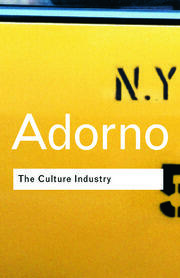

52:09 · 5 OPERE
Una vignetta del 1989 sui mezzi di disinformazione di massa.
Il filo del discorso
Una vignetta televisiva che il relatore data al 1989 diventa il punto di arrivo di una riflessione su conformismo, responsabilità e autonomia del giudizio. Prima di leggerla, il contributo contrappone agli interessi economici una idea dell’individuo ricavata dalla cultura greca e una lettura del messaggio cristiano centrata sulla gratuità e sulla rinuncia al potere. Il passaggio ad Adorno fornisce poi la chiave della discussione: l’industria culturale può orientare desideri e comportamenti fino a rendere normale una adesione priva di esame personale. Nella vignetta descritta, un tribunale immaginario chiama a rispondere alcuni volti della televisione; la responsabilità viene infine spostata sugli spettatori e anche il giudice torna a guardare il programma. La lettura insiste così sul rapporto reciproco fra offerta televisiva e consenso del pubblico. Il relatore estende questa critica alla comunicazione del periodo pandemico e alla difficoltà di seguire argomentazioni lunghe. La scheda conserva il percorso del ragionamento senza trasformare la satira in imputazioni reali, né assumere come fatti provati le generalizzazioni su potere, salute o perdita della democrazia. Restano da accertare autore, testata e giorno della vignetta; il saggio di Adorno è invece identificato dal passo citato.
I libri nel discorso

Culture Industry Reconsidered
Copertina della raccolta The Culture Industry che contiene il saggio: Copertina della raccolta The Culture Industry: Selected Essays on Mass Culture, a cura di J. M. Bernstein, Routledge Classics, 2001; prima edizione della raccolta 1991. ISBN 9780415253802. Il catalogo bibliotecario descrive viii,210 pagine; il catalogo attuale dell’editore indica 224 pagine. Non è una copertina autonoma del singolo saggio.
L’indice Routledge conferma Culture Industry Reconsidered. L’ISBN appartiene alla raccolta inglese; non si attribuisce questa edizione al filmato.
Passo attribuito ad Adorno, identificato testualmente in Culture Industry Reconsidered; titolo non pronunciato nel filmato.
Passaggio 23:36 ↗ · Fonti e libro ↗
Risposta alla domanda: che cos’è l’Illuminismo?
Identificazione probabile
Copertina della raccolta che comprende il saggio sull’Illuminismo: Firenze University Press · Sette scritti politici liberi · 2011 · a cura di Maria Chiara Pievatolo
Copertina del volume cartaceo FUP che comprende il saggio, riscontrato dal catalogo universitario. L’ISBN appartiene alla raccolta; il filmato non annuncia un’edizione e il titolo del saggio è un’identificazione probabile della citazione.
Kant e il coraggio di usare il proprio intelletto: allusione riconoscibile al saggio sull’Illuminismo.
Passaggio 50:48 ↗ · Fonti e libro ↗
Bibbia
Copertina: San Paolo, 2014 · Nuova Versione dai Testi Antichi · edizione di riferimento
Giovane ricco, prologo di Giovanni e Passione richiamati; non viene indicata una edizione biblica.
Passaggio 11:54 ↗ · Fonti e libro ↗
Tempi moderni (Modern Times)
Immagine ufficiale di Tempi moderni: Film del 1936 scritto, diretto, prodotto e interpretato da Charles Chaplin, con Paulette Goddard. Immagine ufficiale di catalogo.
Fotografia in bianco e nero fornita dal sito Chaplin: Charlot e un altro operaio fra gli ingranaggi. Non è una copertina di libro né una locandina con testo. La prima miniatura di 80 × 80 pixel è stata respinta e sostituita con il file principale di 450 × 600.
Chaplin e Tempi moderni espliciti come immagine della disciplina produttiva.
Passaggio 32:44 ↗ · Fonti e libro ↗
La banalità del male. Eichmann a Gerusalemme
Identificazione probabile
Copertina: Feltrinelli · Universale Economica Saggi · 2023
Immagine autentica dell’opera, controllata visivamente; l’edizione di riferimento non è attribuita al filmato.
Eichmann a Jerusalem esplicito; riferimento riconoscibile al libro di Arendt, non citazione testuale verificata della specifica risposta.
Passaggio 37:15 ↗ · Fonti e libro ↗Minutaggi ricavati da testi automatici, da riascoltare. Le identificazioni probabili sono segnalate accanto ai libri.